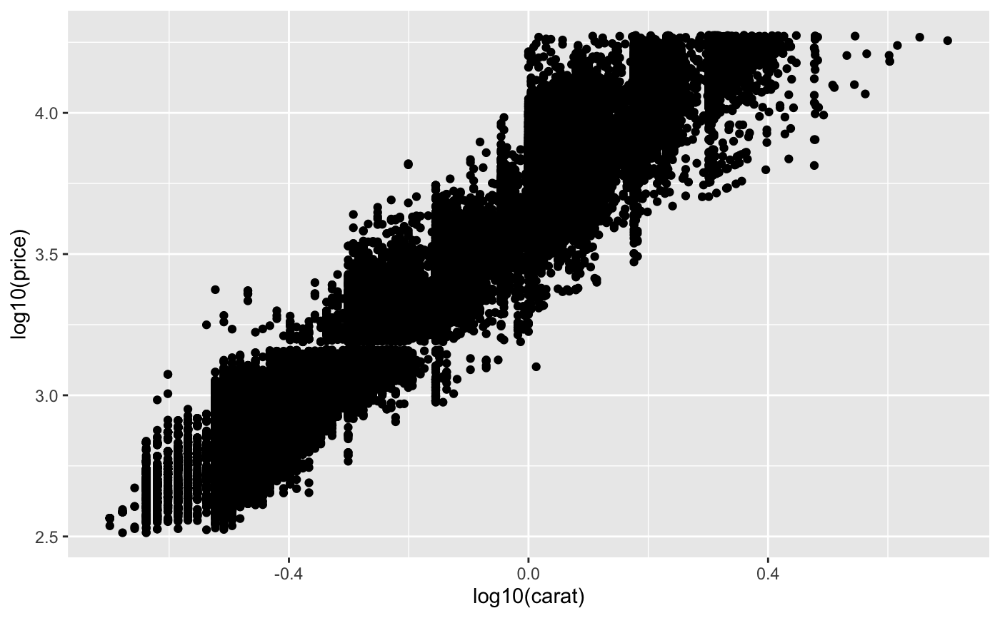
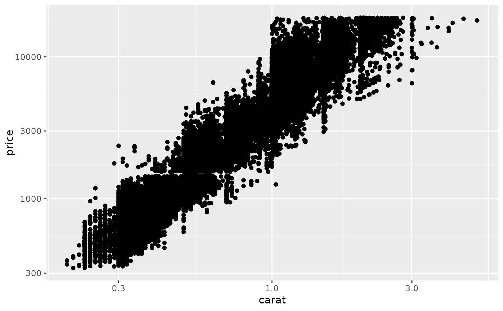
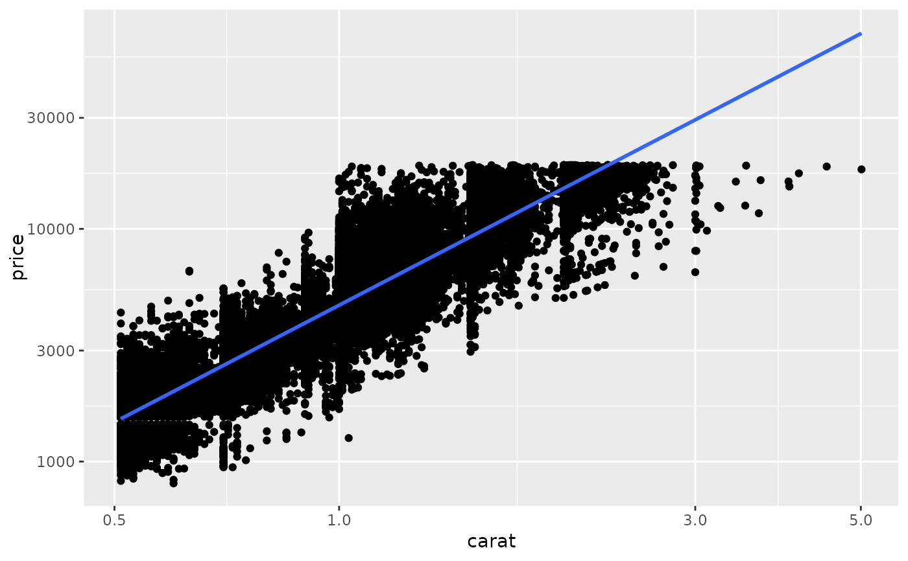
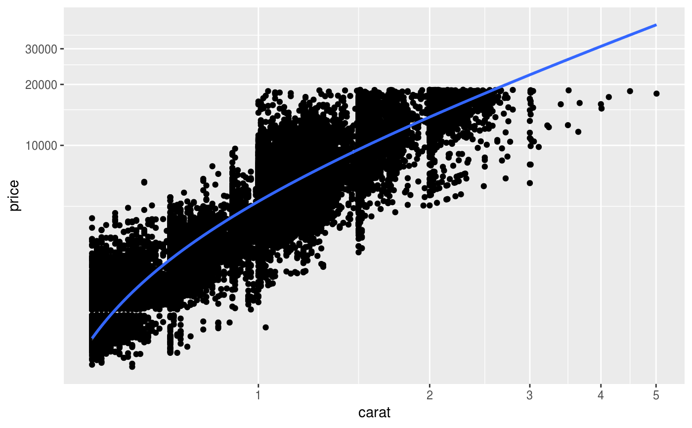
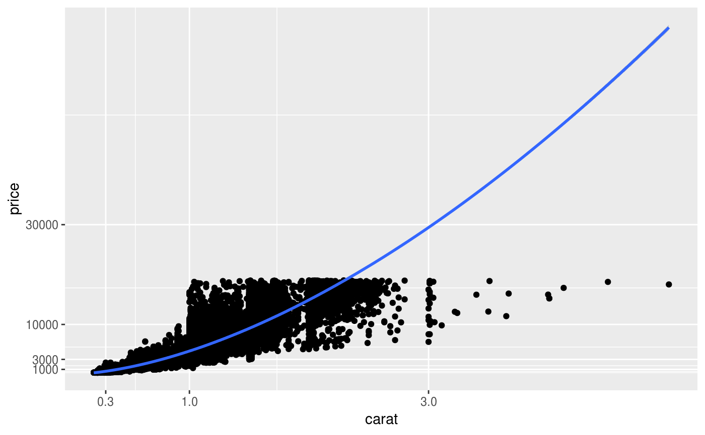
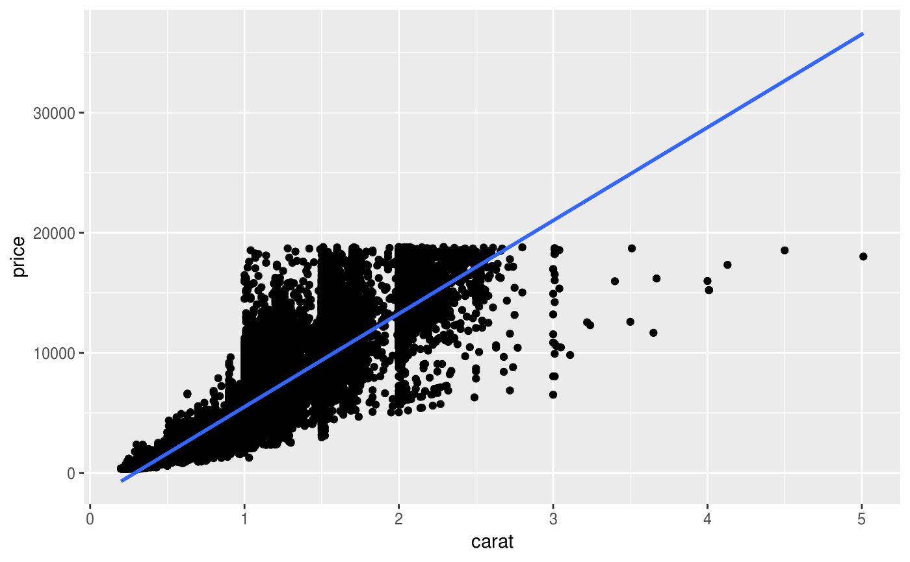
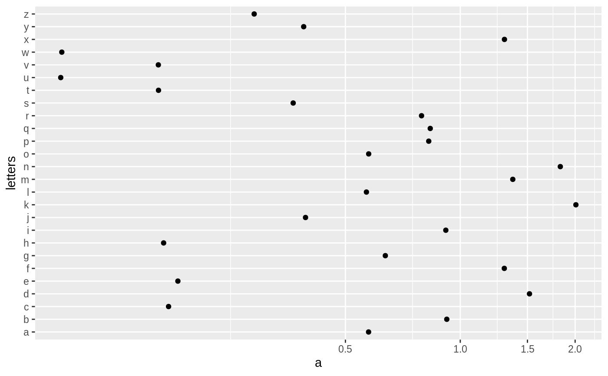
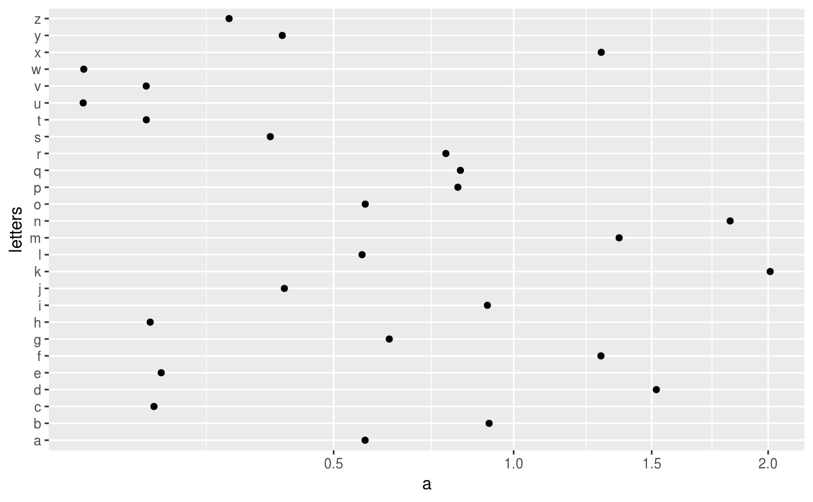

coord_trans is different to scale transformations in that it occurs after
statistical transformation and will affect the visual appearance of geoms - there is
no guarantee that straight lines will continue to be straight.
coord_trans(x = "identity", y = "identity", limx = NULL, limy = NULL, clip = "on", xtrans, ytrans)
| x, y | transformers for x and y axes |
|---|---|
| limx, limy | limits for x and y axes. (Named so for backward compatibility) |
| clip | Should drawing be clipped to the extent of the plot panel? A
setting of |
| xtrans, ytrans | Deprecated; use |
Transformations only work with continuous values: see
scales::trans_new() for list of transformations, and instructions
on how to create your own.
# See ?geom_boxplot for other examples # Three ways of doing transformation in ggplot: # * by transforming the data ggplot(diamonds, aes(log10(carat), log10(price))) + geom_point()# * by transforming the scales ggplot(diamonds, aes(carat, price)) + geom_point() + scale_x_log10() + scale_y_log10()# * by transforming the coordinate system: ggplot(diamonds, aes(carat, price)) + geom_point() + coord_trans(x = "log10", y = "log10")# The difference between transforming the scales and # transforming the coordinate system is that scale # transformation occurs BEFORE statistics, and coordinate # transformation afterwards. Coordinate transformation also # changes the shape of geoms: d <- subset(diamonds, carat > 0.5) ggplot(d, aes(carat, price)) + geom_point() + geom_smooth(method = "lm") + scale_x_log10() + scale_y_log10()ggplot(d, aes(carat, price)) + geom_point() + geom_smooth(method = "lm") + coord_trans(x = "log10", y = "log10")# Here I used a subset of diamonds so that the smoothed line didn't # drop below zero, which obviously causes problems on the log-transformed # scale # With a combination of scale and coordinate transformation, it's # possible to do back-transformations: ggplot(diamonds, aes(carat, price)) + geom_point() + geom_smooth(method = "lm") + scale_x_log10() + scale_y_log10() + coord_trans(x = scales::exp_trans(10), y = scales::exp_trans(10))#> Warning: NaNs produced#> Warning: NaNs produced#> Warning: NaNs produced#> Warning: NaNs produced# Also works with discrete scales df <- data.frame(a = abs(rnorm(26)),letters) plot <- ggplot(df,aes(a,letters)) + geom_point() plot + coord_trans(x = "log10")plot + coord_trans(x = "sqrt")